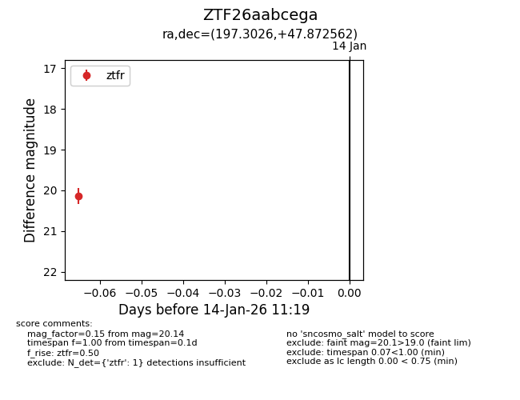
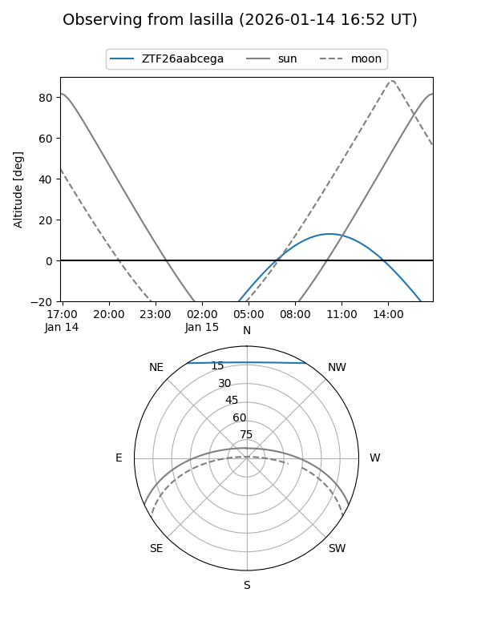
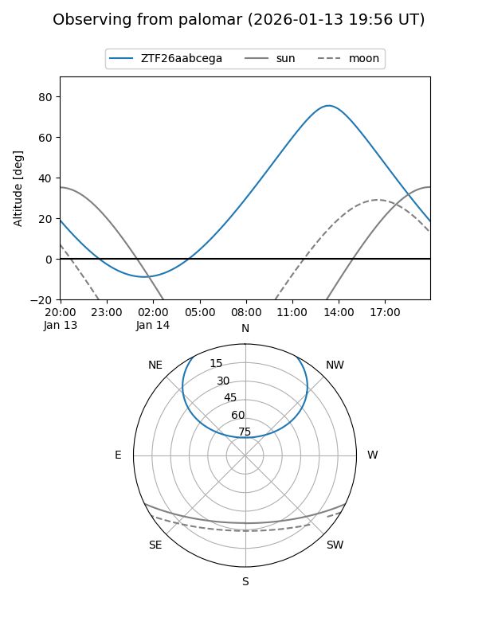

ZTF26aabcega
Target ZTF26aabcega at 2026-01-14 11:20
Aliases and brokers:
FINK: link
Lasair: link
ALeRCE: link
alt names
ZTF26aabcega (ztf,fink_ztf)
Coordinates:
equatorial (ra, dec) = 197.3026,+47.87256
equatorial (HMS+DMS) = 13:09:12.63,+47:52:21.22
galactic (l, b) = (114.6067,+68.96738)
Flags:
Photometry:
last ztfr=20.14
1 ztfr detections
Lightcurve

Visibility


Additional plots